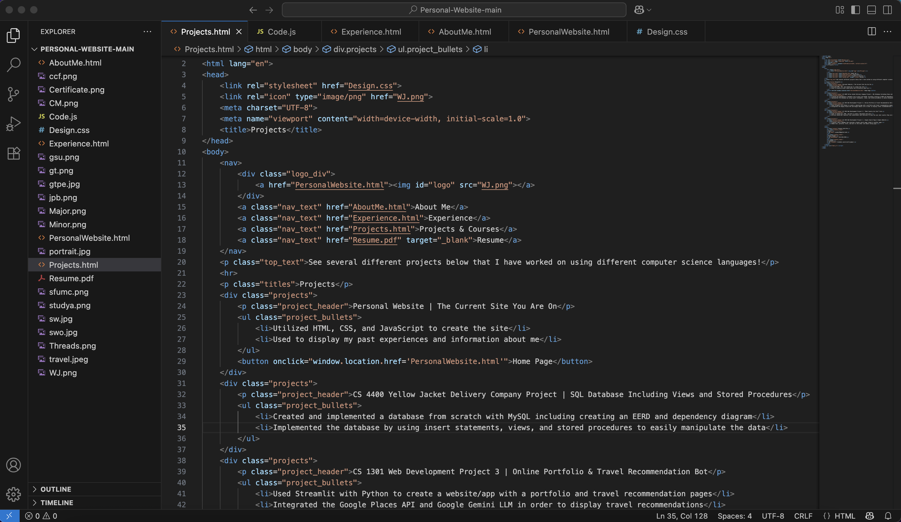
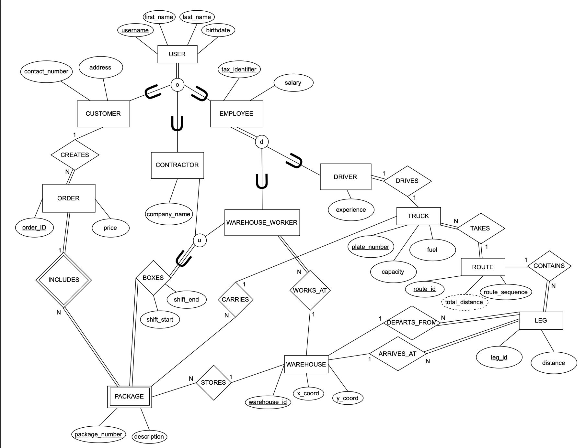
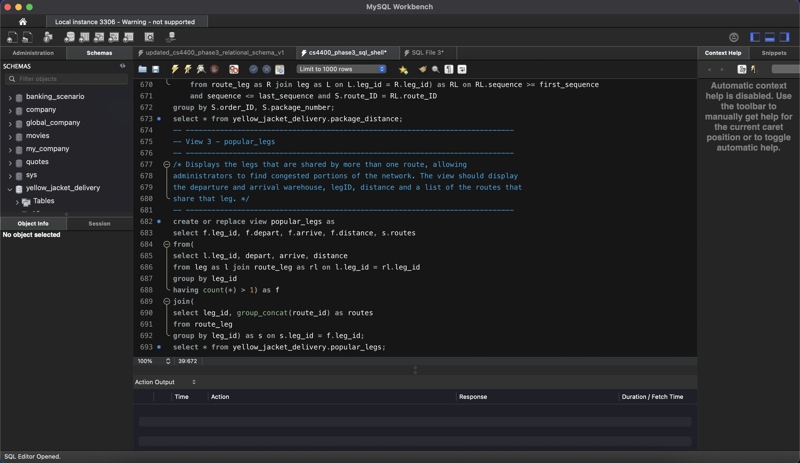
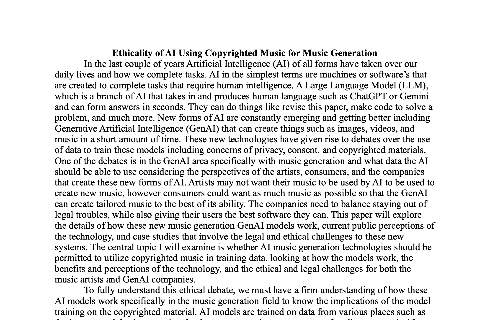
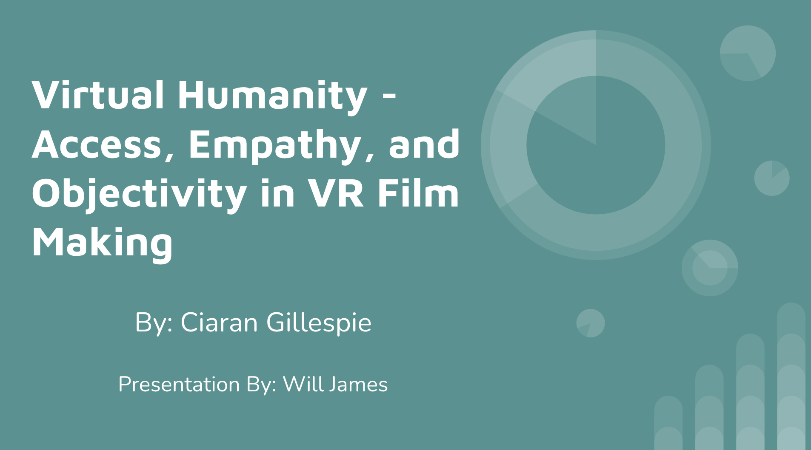
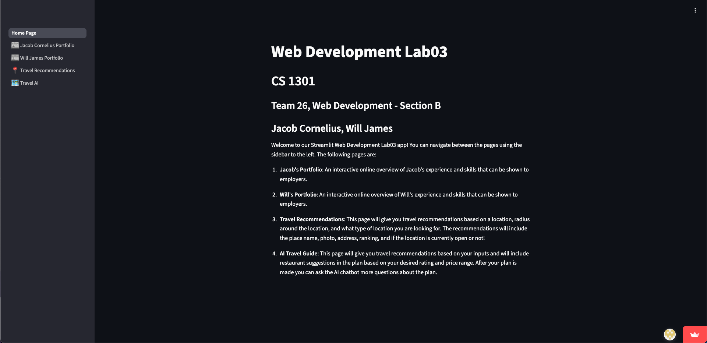
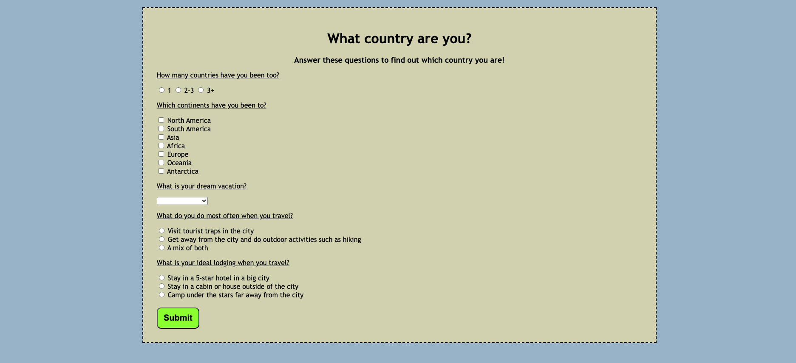
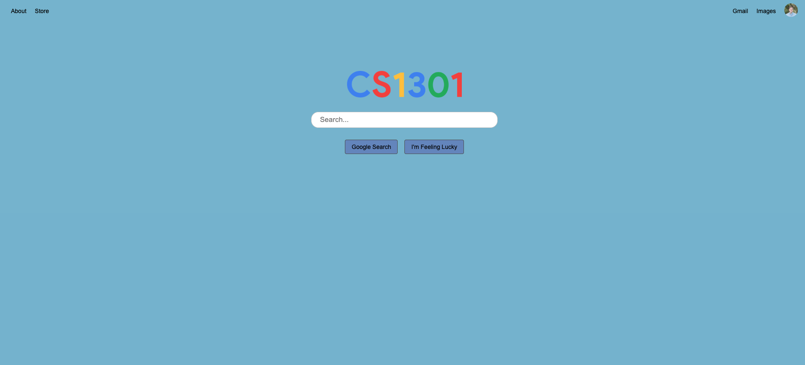
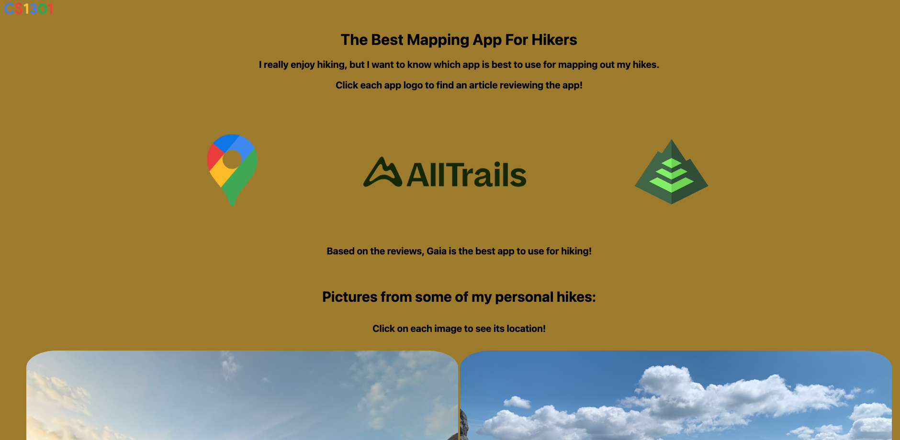

See several different projects below that I have worked on using different computer science languages!
My Work
- Utilized HTML, CSS, and JavaScript to create the site
- Used to display my past experiences and information about me

- Created and implemented a database from scratch with MySQL including creating an EERD and dependency diagram
- Implemented the database by using insert statements, views, and stored procedures to easily manipulate the data


- Researched into the ethical decisions to think about when using AI generated music by looking at all viewpoints
- Learned about techniques used in AI music generation and AI systems being used in the background to run these softwares

- Created and presented this presentation to my class including bringing in example media to support the claims in the paper
- Researched into VR Film Making and how it can be portrayed as one thing, but in the background be something different

- Used Streamlit with Python to create a website/app with a portfolio and travel recommendation pages
- Integrated the Google Places API and Google Gemini LLM in order to display travel recommendations

- Code in JavaScript, HTML, and CSS to create a Buzzfeed like quiz
- Utilize JavaScript features like conditionals and functions to show the user what country they are

- Created a basic webpage that mimicked a Google search page linked to another page
- Added text, pictures, hrefs, and more to the other site about hiking apps


Relevant Courses
- CS 1301: Introduction to Computing
- CS 1331: Introduction to Object Oriented Programming
- CS 1332: Data Structures and Algorithms
- CS 3001: Computing and Society
- CS 4400: Introduction to Database Systems
- LMC 2400: Introduction to Media Studies
- LMC 2700: Introduction to Computational Media
- MGT 2210: Information Systems and Digital Transformation
- MGT 4057: Business Process Analysis and Design
- MUSI 2010: Fundamentals of Musicianship I
- PSYC 1101: Introduction to Psychology
- PSYC 4690: NeuroAI: Models of the Human Brain and Mind